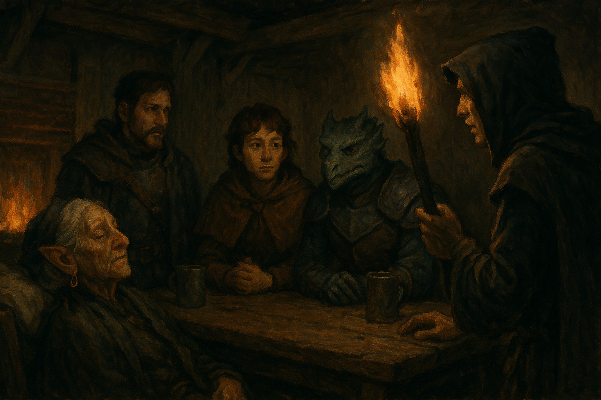

Chapter 1: Stinky Stinky
Hand of the Lich


Hand of the Lich
15050.11.18
酒館樓上，喜利・歐喜利聽見了YHWH和英荻格的房間傳來了異樣的聲音，他將耳朵貼在門上，仔細聆聽。木頭嘎嘎聲、喘氣聲，他不知道這是什麼意思。憑藉著他的盜賊工具，喜利・歐喜利悄聲溜進了房間內，裡面一片漆黑。他躲在角落，緩緩接近，小小拉開拱起的棉被，看見裡頭似乎有肉體在扭動著。然後他聽見了英荻格說了聲「換一下」。雖然好奇，但此刻喜利・歐喜利知道自己似乎不太適合在這裡，於是他便悄聲離開，但是關門的聲音疑似被YHWH聽見了。
喜利・歐喜利走下樓，看見米多莉、薩梅爾，和剛才讓他沒睡好的波正在用餐。大家討論著下一步該去哪裡。最終，大家決定應該要去樓上，將其他夥伴叫下來一起討論。
來到YHWH的房前，YHWH已經著好裝，準備下樓了，但英荻格似乎只想賴在床上。米多莉也敲敲龍恩的房門，龍恩站了起身，開啟了門，米多莉隨即感受到房間內有一股惡臭，甚至這股惡臭有種黑色迷霧的感覺，但肉眼卻看不見。隨著龍恩下樓，惡臭卻跟隨著龍恩一起移動。
餐桌上，大家討論著龍恩可疑的手，酒館餐廳另一桌一個神秘的陌生人朝他們靠近。這名自稱「拉」的人是一名占卜師，他表示身上攜帶的神秘羅盤可以偵測邪惡，而在這幾天，指針狠狠指著這間旅店內龍恩的那隻手，而指針從來沒有這麼穩定過。大家對這名陌生人感到疑惑與警戒，但是在拉表示自己全家都是拉索斯教徒時，大家對他的可疑飆升到最高點，直到酒館老闆前來緩頰，表示自己也是拉索斯教徒，但是也沒有對大家有惡意，拉索斯教在王國，甚至帝國內都是非常普遍的宗教。
冒險者們討論著應該先處理龍恩的手，還是先處理這名可疑的拉索斯教徒。拉表示自己來這裡的目的只是要警告而已，沒有要特別做什麼。冒險者們討論著是否該嘗試用火去烤龍恩的手，或是將他剁掉。在一陣紛擾中，老闆建議拉先跑走，以免遭到這群怪人波及。
冒險者們開始盤點該往哪裡去，比較有機會找到有用的線索。他們提到了龍恩的故鄉尖頂寺、YHWH待過的拉松學院、或者是距離米多莉家鄉方努爾市不遠的大學城，那裡似乎是所有知識的貯藏庫。
冒險者決定以大學城為目標，作為冒險的下一步。然而徒步前往大學城要花非常長的時間，屆時龍恩的狀況會是如何，就很難說了。經過討論後，冒險者們原本想租用或購買馬車，但費用太高，於是考慮單純購買兩批馬匹，搭配米多莉召喚的小馬，三匹馬一同前行。喜利・歐喜利也打算利用手邊的用具，打造一個可以讓馬匹拉在後面的座位，自己可以坐在上面，能少佔用一個座位。
米多莉和薩梅爾決定去街上買點東西，喜利・歐喜利在馬廄做工，波和YHWH在旅店餐廳處談天，其他人則暫時在樓上休息。波和YHWH提及了他在妖精荒野時，曾經在一名拉索斯信徒的身上找到一張紙條，上面記載了關於一支手和一支眼睛的事，讓他不禁聯想到現在龍恩接上的那隻手。YHWH回想起過去曾在拉松學院時聽說過的一個傳說，一位名為維克那的古老巫妖，留下了一支手和一支眼睛，使用他們的人會帶來極大的危險。
米多莉和薩梅爾購買了一些簡單的用品後，在路邊見到了一名彈奏著魯特琴的中年男子，他彈奏的曲子讓薩梅爾感到有點耳熟，因此他們便來到了樂手的面前，聽他的表演。這名男子自稱叫丹，是過去住在麥克嵩的人，但已經在這邊待好一陣子了。他彈奏的曲子叫《回憶》，薩梅爾不記得自己曾經演奏過這首樂曲，不過也許是在路上聽見的也說不定。米多莉覺得這人十分有趣，便和他說了過去自己曾演奏過的一首《龍寶寶》，丹也覺得有趣，米多莉便邀他一起回到旅店，去見見這名傳說中的龍人。
龍恩睜開眼睛，恢復了意識，發現自己的雙手正用力掐著旅店老闆，旅店老闆盡可能地嘗試掙脫，直到喜利・歐喜利介入，才暫時脫困。老闆喊著，這名龍人今晚不能在這裡過夜。冒險者們將龍恩拖出旅店外，讓老闆在旅店內休息。此時米多莉和薩梅爾正好帶丹回到旅店。丹搞不清楚狀況，頻頻讓薩梅爾感到生氣，後來乾脆用魔法讓丹暫時睡去了。
隨著龍恩恢復了理智，冒險者們決定先找個附近的住宿處，至少讓龍恩今晚在別的地方過夜，明天早上再出發去麥克嵩，處理馬匹的購買，然後再出發前往大學城。
米多莉、龍恩、薩梅爾和波四人隨著老闆的指示，在剛剛購物處的附近，找到了一間「旅店」。破舊的店面很顯然沒有招牌，一樓一名看起來年齡難以估計的老太太和他們收了錢，表示樓上的空間想住哪一間自己挑選。四人爬到二樓，每一間看起來都是十分破舊，不是沒有窗戶，就是窗戶都破了。看見一旁還有樓梯向上，龍恩之外的三人便決定向三樓走去，但很意外的，三樓和二樓看起來長得一模一樣。三人決定做個測試，在三樓其中一間房門口做了記號，薩梅爾和米多莉再往上爬到四樓（當然，也是長得一模一樣），發現剛剛做的記號在四樓也能看見。米多莉決定爬到五樓，從破掉的窗戶口丟了個垃圾下去，但是四樓的薩梅爾和三樓的波都沒有從窗外看見東西掉下去。
對於這房子感到十分困惑的四人，決定先暫時回原本的旅店吃晚餐，順便告訴喜利・歐喜利這間新旅店的位置，晚點再回來住。但是當他們走回一樓時，卻沒有看見原本的那名老太太。
冒險者們決定輪流守夜，以免這個陌生的環境有危險。在龍恩和米多莉熟睡後，波和薩梅爾意識到時間已經不早了，喜利・歐喜利卻還未來到旅店找他們，因此考慮先回舊旅店去。兩人商討著，波提議應該把米多莉也叫醒一起去，以免留著龍恩和米多莉兩人，龍恩有可能做出什麼事。最終兩人還是妥協，決定四人一起行動最安全。
同一時間，來到旅店的喜利・歐喜利爬到樓上，卻完全沒有見到人影。因為感到不對勁，他決定跑到旅店外，卻從路人那裡得知，這間「旅店」早在50年前就已經廢棄，早就沒有在營業了。狐疑的喜利・歐喜利為了確保夥伴們的安全，還是決定回到旅店大廳。
走到一樓的薩梅爾、波、米多莉和龍恩看見了喜利・歐喜利，五人討論著剛剛喜利・歐喜利怎麼沒有在樓上看見他們，然後便走上三樓去。
不久後，樓梯間冒出黑煙。冒險者們發現時，火勢已逐漸散開。大家趕緊把行囊收拾好，朝著樓下跑，卻也發現二樓一樣在火勢之中。大家跑到一樓，意外地發現一樓竟然完全沒有受到火勢影響。大家決定今晚就待在一樓過夜。
喜利・歐喜利守著夜，卻發現應該熟睡中的龍恩伸手試著搶走他正在研究的綁在手上的綴飾，幸好他及時閃開。這幾天龍恩無法控制的行為越發嚴重，對冒險團來說，眼前當務之急便是解除龍恩身上奇異的狀況，而這一切都指向那隻來路不明的手。
15050.11.18
Upstairs in the tavern, Siri heard strange sounds coming from YHWH and Indigo's rooms. He put his ear against the door and listened carefully. There was a rattling of wood, a gasping sound, and he didn't know what it meant. Armed with his thieves' tools, Siri quietly slipped into the room, which was completely dark. He hid in the corner and approached slowly. He pulled open the bulging quilt and saw that there seemed to be flesh twisting inside. Then he heard Indigo say "Change". Although curious, Siri knew at this moment that he didn't seem to be suitable here, so he left quietly, but the sound of closing the door seemed to be heard by YHWH.
Siri walked downstairs and saw Midori, Samael, and Beau, who had not slept well just now, eating. Everyone discussed where to go next. Finally, everyone decided that they should go upstairs and call the other partners down to discuss it together.
Arriving at YHWH's room, YHWH was already dressed and ready to go downstairs, but Indigo seemed to just want to stay in bed. Midori also knocked on Ron's door. Ron stood up and opened the door. Midori immediately felt a stench in the room. The stench even felt like a black mist, but it was invisible to the naked eye. As Ron goes downstairs, the stench moves with Ron.
At the dinner table, everyone was discussing Ron's suspicious hand, and a mysterious stranger approached them at another table in the tavern restaurant. The man who calls himself "La" is a fortune teller. He said that the mysterious compass he carries can detect evil. In the past few days, the pointer has been pointed at the hand of Ron in this hotel, and the pointer has never been so stable. Everyone was confused and wary of this stranger, but when La said that his whole family was a Rathos believer, everyone's suspicion of him soared to the highest point, until the tavern owner came to comfort him and said that he was also a Rathos believer, but he had no ill intentions towards everyone. The Rathos religion was a very common religion in the kingdom and even the empire.
The adventurers debated whether to deal with Ron's hand first or the suspected Rathosian cultist. La said that the purpose of coming here was just to give a warning, and that he had nothing special to do. The adventurers debate whether they should try to roast Ron's hands with fire or chop him off. During the commotion, the boss suggested that La run away first to avoid being attacked by this group of weirdos Beau.
The adventurers began to take stock of where to go and had a better chance of finding useful clues. They mentioned Ron's hometown Peak Temple, the Lasson Academy where YHWH stayed, or Great Citadel not far from Midori's hometown Fannur city, which seemed to be the repository of all knowledge.
The adventurer decided to target Great Citadel as the next step in the adventure. However, it will take a very long time to reach Great Citadel on foot. It is difficult to say what the condition of Ron will be by then. After discussion, the adventurers originally wanted to rent or buy a carriage, but the cost was too high, so they considered simply buying two batches of horses, paired with the ponies summoned by Midori, and the three horses traveling together. Siri also plans to use the tools at hand to create a seat that horses can pull behind, so that he can sit on it and occupy one less seat.
Midori and Samael decided to go to the street to buy something, Siri was working in the restaurant, Beau and YHWH were chatting in the hotel restaurant, and the others were resting upstairs temporarily. Beau and YHWH mentioned that when he was in the Feywild, he once found a note on a Lasos believer, which recorded something about a hand and an eye, which reminded him of the hand that Ron is now attached to. YHWH recalled a legend I heard in the past when I was at Larson Academy. An ancient lich named Vecna left behind a hand and an eye. Those who use them will bring great danger.
After Midori and Samael purchased some simple supplies, they met a middle-aged man playing the lute on the roadside. The music he played seemed a bit familiar to Samael, so they came to the musician to listen to his performance. The man calls himself Dan and is someone who used to live in Macksohn, but has been here for a while. The song he played was called "Memories". Samael didn't remember that he had played this piece of music before, but maybe he heard it on the road. Midori found this person very interesting, so he told him about a song "Dragon Baby" that he had played in the past. Dan also found it interesting, so Midori invited him back to the hotel to meet this legendary dragon man.
Ron opened his eyes, regained consciousness, and found that his hands were pinching the innkeeper. The innkeeper tried to break free as much as possible, until Siri intervened, and he was temporarily freed. The boss shouted that this dragon man could not stay here tonight. The adventurers dragged Ron out of the hotel and let the boss rest inside the hotel. At this time Midori and Samael happened to take Dan back to the hotel. Dan was confused about the situation and frequently made Samael angry. Later, he simply used magic to put Dan to sleep temporarily.
As Ron regained his sanity, the adventurers decided to find a nearby accommodation first, at least let Ron spend the night somewhere else tonight, and then set off to Macksohn tomorrow morning to deal with the purchase of horses, and then set off for Great Citadel.
Midori, Ron, Samael and Beau followed the boss's instructions and found a "hotel" near the shopping place. The dilapidated storefront obviously had no signboard. An old lady on the first floor who seemed to be of indeterminate age took the money with them and said that they could choose which room they wanted to live in in the space upstairs. The four people climbed to the second floor. Every room looked very dilapidated, either without windows or with broken windows. Seeing that there were stairs going up, the three people except Ron decided to walk towards the third floor. To their surprise, the third and second floors looked exactly the same. The three decided to do a test and marked the door of one of the rooms on the third floor. Samael and Midori climbed up to the fourth floor (of course, they looked exactly the same) and found that the mark they just made could also be seen on the fourth floor. Midori decided to climb to the fifth floor and threw a piece of garbage through the broken window, but neither Samael on the fourth floor nor Beau on the third floor saw anything fall from the window.
The four people were very confused about this house and decided to go back to the original hotel for dinner temporarily. By the way, they told Siri the location of the new hotel and would come back later. But when they walked back to the first floor, they didn't see the original old lady.
The adventurers decided to take turns to keep vigil to avoid danger in this strange environment. After Ron and Midori fell asleep, Beau and Samael realized that it was getting late and Siri had not come to the hotel to find them, so they considered going back to the old hotel first. The two discussed, and Beau suggested that Midori should be woken up and go together, so as not to leave Ron and Midori alone, and Ron might do something. In the end, the two compromised and decided that it would be safest for the four of them to act together.
At the same time, Siri, who came to the hotel, climbed upstairs, but saw no one at all. Feeling something was wrong, he decided to run outside the hotel, but learned from passers-by that this "hotel" had been abandoned 50 years ago and was no longer in business. The suspicious Siri decided to return to the hotel lobby to ensure the safety of her friends.
Samael, Beau, Midori and Ron who walked to the first floor saw Siri. The five of them discussed why Siri didn't see them upstairs just now, and then walked up to the third floor.
Shortly after, black smoke billowed from the stairwell. When the adventurers discovered it, the fire had gradually dispersed. Everyone quickly packed their bags and ran downstairs, only to find that the second floor was also in flames. Everyone ran to the first floor and surprisingly found that the first floor was not affected by the fire at all. Everyone decided to stay on the first floor tonight.
Siri was watching the night, only to find that Ron, who was supposed to be sleeping, reached out and tried to snatch away the ornament tied to his hand that he was studying. Fortunately, he got out of the way in time. In the past few days, Ron's uncontrollable behavior has become more and more serious. For the adventure group, the top priority is to solve the strange condition of Ron, and all of this points to the unknown hand.